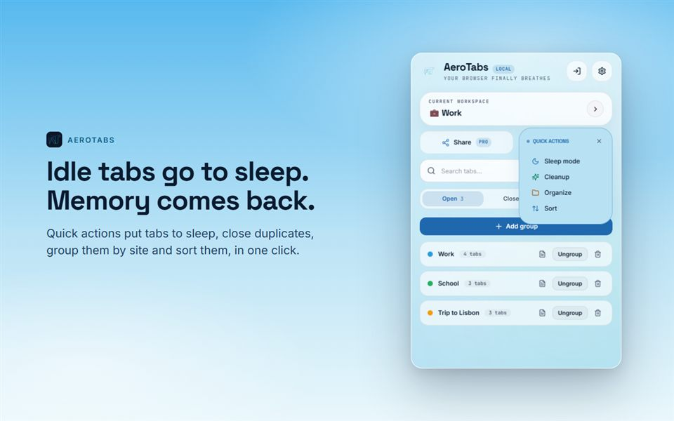
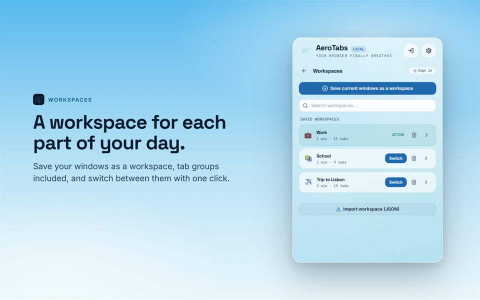

← Projetos
Em beta
AeroTabs
Uma extensão de browser que suspende os separadores que não estou a usar.
JavaScript · Manifest V3 · Supabase



Em que consiste
Liberta memória ao suspender os separadores inativos. Também os arruma em grupos e espaços de trabalho, sincroniza com o Supabase e partilha sessões cifradas. Funciona em Chrome e Firefox (Manifest V3).
Porque o fiz
Tinha um problema meu: separadores a mais abertos. Guardo de tudo, vídeos, repositórios do GitHub, documentação. O que mais gostei foi resolvê-lo eu próprio, com a minha pesquisa.
O mais difícil
Encontrar as ideias certas e cuidar dos detalhes para a extensão ser mesmo útil sem se tornar uma confusão enorme.
Ponto da situação
Em beta. Estou a preparar a publicação na Chrome Web Store e no Firefox Add-ons.